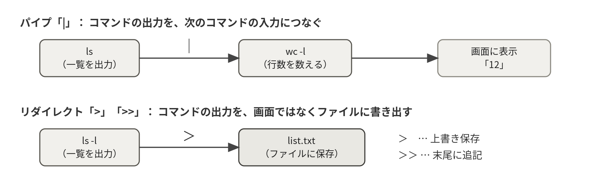

3-1CLIとGUI
コンピュータの操作方法には、マウスで画面上の部品を操作するGUI（Graphical User Interface）と、文字でコマンドを打ち込むCLI（Command Line Interface）の2つの様式がある。日常の利用にはGUIが便利だが、サーバ管理の世界では今もCLIが主役である。理由は3つある。第一に、操作を正確に記録・伝達できる。「この辺をこうクリックして……」ではなく、コマンドをそのまま書き写せば、誰でも寸分違わず同じ操作を再現できる（本資料や指導書のコード枠がまさにそれである）。第二に、自動化できる。CLIの操作はそのままシェルスクリプトやcronに載せられるが、GUIのクリック操作の自動化は難しい。第三に、軽い。GUIは描画のために多くのメモリとCPUを消費する。実習で使ったRaspberry Pi OS「Lite」はGUIを持たない構成であり、節約した資源をすべてLuantiサーバに回せている。
CLIの入口となる画面をターミナル（端末）と呼ぶ。そしてターミナルの向こう側で、入力されたコマンドを解釈・実行しているプログラムがシェルである。両者はセットで語られることが多いが、ターミナルは「窓口」、シェルは「通訳」と役割が異なる。
3-2シェルは何をしているのか
ターミナルに ls -l /home と入力してEnterを押したとき、シェル（bash）は次の仕事をしている。①入力を単語に分解する（コマンド名 ls、オプション -l、引数 /home）。②コマンドの実体を探す。③見つけたプログラムを実行するようカーネルに依頼する。④プログラムの出力を受け取って画面に流す。⑤終了を検知して次の入力を待つ。つまりシェルは「人間とカーネルの間に立つ通訳」である。GUIのファイルマネージャと違い、操作を文字で正確に表現できるため、記録・再現・自動化（シェルスクリプト）が容易であることがCLI最大の利点である。
3-3コマンドはどこにあるのか：PATHの仕組み
ls と打つだけで /usr/bin/ls が実行されるのは、シェルが環境変数PATHに列挙されたディレクトリを先頭から順に探すからである。echo $PATH を実行すると /usr/local/bin:/usr/bin:/bin のようなコロン区切りのリストが表示される。「command not found」というエラーは、①コマンド名の打ち間違い、②未インストール、③インストール先がPATHに入っていない、のいずれかを意味する。which コマンド名 で実体の場所を確認できる。cronに登録するコマンドを絶対パスで書くのも、cronの環境ではPATHがほとんど設定されていないからである（第8章）。
3-4環境変数と設定ファイル
シェルの動作を調整する設定値は環境変数として保持される。値の確認は echo $変数名、一時的な変更は export 変数名=値 で行う。exportによる変更はそのシェルを閉じると消えるため、永続化したい設定は ~/.bashrc（シェル起動のたびに読み込まれる）に書き込む。書き込んだ直後は source ~/.bashrc で再読み込みすると反映される。
| 環境変数 | 意味 |
|---|---|
PATH | コマンドを探すディレクトリのリスト |
HOME | 自分のホームディレクトリ（~ の実体） |
USER | 現在のユーザ名 |
LANG | 言語・地域設定（ja_JP.UTF-8 など） |
PS1 | プロンプトの表示内容 |
HISTSIZE | コマンド履歴の保存件数 |
EDITOR | 標準のテキストエディタ |
3-5標準入出力とリダイレクト
すべてのコマンドは、3本の「配管」を持って生まれる。標準入力（stdin、番号0）、標準出力（stdout、番号1）、標準エラー出力（stderr、番号2）である。通常はいずれも端末につながっているが、この配管をつなぎ替えるのがリダイレクトとパイプである。エラーメッセージが標準出力と別の配管（stderr）になっているのがポイントで、「正常な結果はファイルへ、エラーは画面へ」といった振り分けができる。
ls > list.txt # 標準出力をファイルへ（上書き）
ls >> list.txt # 標準出力をファイルへ（追記）
ls 2> error.txt # 標準エラー出力をファイルへ
ls > all.txt 2>&1 # 両方を同じファイルへ
wc -l < list.txt # ファイルを標準入力として与える実習の第5回でcronに書いた「> …/status.txt 2>&1」は、「正常な出力もエラーも同じファイルに書き出す」という意味だったことが、ここまで読むと分かるはずである。

パイプ「|」は、あるコマンドの標準出力を次のコマンドの標準入力に直結する。ls | wc -l、grep xxx log.txt | sort | uniq -c のように、小さな道具を組み合わせて複雑な処理を組み立てるのがUNIX流である。1つのコマンドの出力を「次の道具の材料」と考える発想に慣れると、コマンドラインの応用力が一気に上がる。
3-6その他の便利機能
- ワイルドカード：
*は任意の文字列、?は任意の1文字に展開される。rm world_*.tar.gzのようにまとめて指定できる。展開はシェルが行っており、コマンド自身は展開後のファイル名リストを受け取っている。 - クォート：空白や記号を含む文字列は
"二重引用符"で囲む。シェルスクリプトで変数を"$SRC"のように囲むのは、値に空白が含まれても1つの引数として扱われるようにするためである。 - 履歴と補完：↑↓で履歴を辿り、Ctrl+Rで検索できる。Tabキーの補完はコマンド名・ファイル名の打ち間違いを防ぐ最も簡単な方法であり、常用すべきである。
3-7パイプの道具箱（sort・uniq・cut・xargs）
パイプ（3.5節）の真価は、小さな道具の組み合わせで集計や一括処理を組み立てられることにある。実習では、backup.shの世代削除（第4回）や「プレイヤーごとの入室回数ランキング」（第3回の発展課題）がその実例である。部品となる道具を整理する。
| コマンド | はたらき |
|---|---|
sort | 行を並べ替える。-n 数値順、-r 逆順、-h サイズ表記（1K, 2Gなど）順 |
uniq -c | 連続する重複行をまとめて数える。事前に sort しておくのが約束 |
cut -d区切り -f列 | 各行から指定した列を取り出す（例：cut -d: -f1 で /etc/passwd のユーザ名） |
wc -l | 行数を数える（第1回の演習で使用） |
xargs | 標準入力をコマンドの引数に変換する。-r は入力が空なら何もしない |
grep "joins game" ログ | sort | uniq -c | sort -nr # 頻度集計の型
ls -1t world_*.tar.gz | tail -n +8 | xargs -r rm -- # 世代削除（第4回）
cut -d: -f1 /etc/passwd | sort | head # ユーザ名の一覧※ 集計の定石は「絞り込む（grep）→ 列を取り出す（cut）→ 並べる（sort）→ 数える（uniq -c）→ 多い順に並べ直す（sort -nr）」。この型を覚えると、ログ解析（第3回）の応用範囲が一気に広がる。